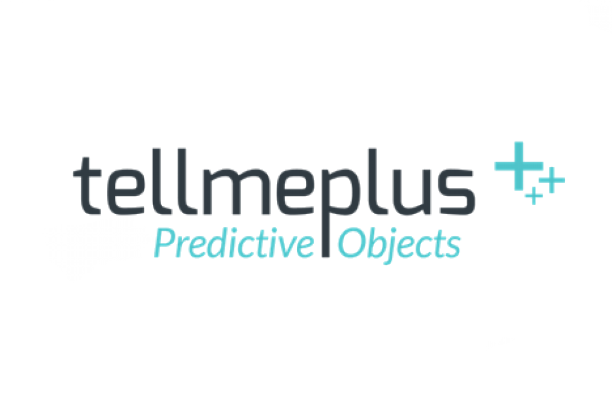

Keycloak
Gestion de l’identit√© et des acc√®s dans une architecture micro-services
Clement Compas
: Lead developer
: Tellmeplus (since 2015)
: Data & ML
Benjamin Garcia

: Senior developer
: Tellmeplus (since 2017)
: JUG Leader

Quelques définitions
OAuth 2
JWT
OIDC
OAuth 2
JWT
OIDC
L’ancienne s√©curit√©
Basic auth
Isolation par la base de donnée
Gestion des utilisateurs en internes üôà
Pas de SSO üò¢
Pas de d√©legation d’auth üò≠
La transformation en micro service
Monolith

Services
Keycloak Vs Hydra
SDK en go, js, …
Nécessite des outils supplémentaire:
ORY Oauthkeeper (proxy)
ORY Security Console (GUI)
ORY Keto (contr√¥le d’acc√®s)
SDK pour jvm, springboot, js, go
GUI / CLI
Proxy google/facebook….
Contr√¥le d’acc√®s
Mise en pratique
Délégation des utilisateurs
Int√©gration √† l’application
Access token
Offline token
Multitenants
Pourquoi ?
Les Realms
Plomberie üîß
La configuration
Les routes
Les adapteurs